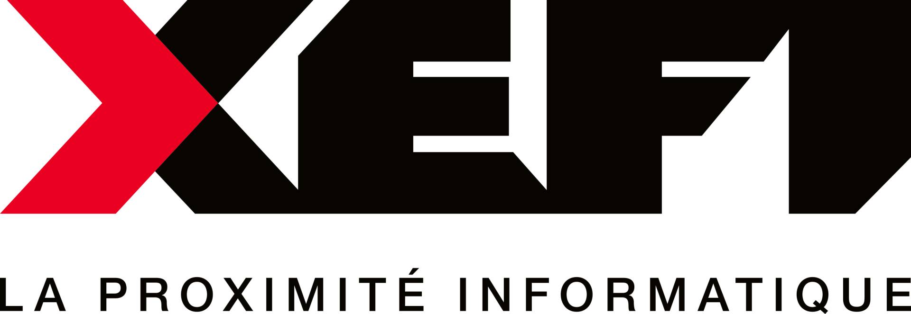

Univers Informatique
Informatique
Univers Informatique que je partage avec la société XEFI, partenaire informatique de proximité pour les TPE/PME. Plus qu'un univers, une passion d'enfance qui en est devenue mon métier.
← Retour à l'accueil
Présentation
Quand la passion devient travail.
À propos
J'ai rejoint la société XEFI en 2021 en tant que technicien conseil sur le projet AURA. Ce projet consiste à assurer la maintenance des infrastructures informatiques ainsi que la mise en œuvre des solutions IT pour les lycées publics, professionnels et agricoles de la région Auvergne-Rhône-Alpes.
Après trois années d'expérience, j'ai évolué vers un poste de Team Leader, fonction que j'occupe aujourd'hui avec engagement et fierté. En complément de mes missions techniques, je coordonne et planifie les interventions d'une équipe de quatre techniciens expérimentés sur le secteur de Saint-Étienne, Vienne et Valence.
À ce titre, j'assure l'organisation et la priorisation des interventions en fonction des urgences et des contraintes terrain, tout en veillant au respect des délais et à la qualité de service. J'accompagne les techniciens dans leurs missions quotidiennes, apporte un support technique en cas de situations complexes et veille à la bonne circulation de l'information au sein de l'équipe.
Je suis également garant du suivi des interventions, de la satisfaction des établissements et de l'amélioration continue des pratiques, en lien avec les exigences du projet AURA.
Mes principales responsabilités
Management & organisation
- Coordination et planification des interventions
- Pilotage opérationnel de l'équipe technique
- Gestion des priorités et des urgences terrain
- Suivi et reporting des interventions
- Respect des procédures et des engagements de service (SLA)
Technique & exploitation
- Gestion et maintien en condition opérationnelle du parc informatique
- Administration des environnements utilisateurs (postes, comptes, accès)
- Paramétrage et configuration des postes de travail
- Déploiement et gestion des applications
Support & incidents
- Support technique de niveau 2 / 3
- Gestion des incidents et des demandes utilisateurs
- Diagnostic et résolution des anomalies
- Escalade et suivi des incidents critiques
Relation client & amélioration continue
- Conseil, accompagnement et relation client
- Formation et accompagnement des utilisateurs
- Suivi des performances et amélioration continue
- Veille au niveau de satisfaction des établissements